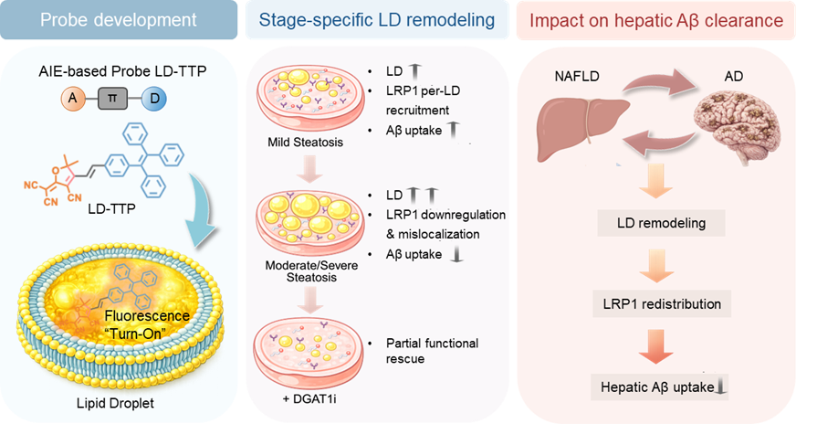

← Volver al equipo
Página personal
Panyi Hu
胡潘宜
Personal posdoctoral
Nanomateriales y sondas fluorescentes de molécula pequeña para investigar enfermedades hepáticas
Afiliación
Hospital de China Occidental, Universidad de Sichuan · Medicina clínica
Incorporación a Tian Lab
2023.03
Los textos de investigación se muestran en el inglés proporcionado por su autor o, si no está disponible, en el original chino.
Presentación
Intereses de investigación
Formación y experiencia
Proyectos de investigación
Publicaciones
Presentación
胡潘宜（Panyi Hu），肝胆外科博士，现任职于四川大学华西医院放射影像研究所博士后/助理研究员。研究方向为小分子荧光探针对细胞器功能状态的可视化研究，以及纳米颗粒介导的靶向药物递送。近三年以第一作者在ACS Sens.、Sensors and Actuators B、ACS Appl Mater Interfaces等发表多篇SCI论文。对肝脏相关疾病及肝脑轴方向具有浓厚的研究兴趣。
Intereses de investigación
小分子荧光探针与细胞器功能状态可视化
纳米颗粒介导的靶向药物递送
肝脏相关疾病及肝脑轴的机制与诊疗新策略
Formación y experiencia
2022.09–2025.06 安徽医科大学第一附属医院，肝胆外科，博士
2019.09–2022.06 安徽医科大学第一附属医院，普通外科（肝胆外科方向），硕士
2014.09–2019.06 安徽医科大学，临床医学，学士
Proyectos de investigación
代谢相关脂肪性肝病中肝脏 LRP1 的空间重塑对肝–脑轴功能障碍的系统性研究
La pregunta
NAFLD 进展中，肝细胞脂滴重塑与 LRP1 再分布之间存在怎样的空间关系？
肝脏 LRP1 功能障碍是否损害外周 Aβ 清除，并进一步促进脑内 Aβ 积累？
肝细胞 LRP1 是否在该过程中发挥因果作用？
恢复脂代谢或 LRP1 功能，能否挽救肝–脑轴功能障碍？
Nuestro enfoque
表征 NAFLD 进展中肝脏脂滴–LRP1 空间重塑；
评估肝脏 LRP1 功能障碍对外周 Aβ 清除的影响；
利用肝细胞特异性 LRP1 敲低与恢复策略验证因果作用；
评估恢复脂代谢或 LRP1 功能对肝–脑轴功能障碍的治疗挽救潜力。
Mi contribución
申请人作为项目提出者和主要执行人，主要承担总体实验设计、技术路线制定以及相关实验开展，同时与 IBEC 合作团队对接，整合成像、代谢与神经退行性分析平台。
Avances
本项目拟研究代谢相关脂肪性肝病（MASLD/NAFLD）中肝脏低密度脂蛋白受体相关蛋白 1（LRP1）的空间重塑及其对肝–脑轴和外周淀粉样β蛋白（Aβ）清除的影响。申请人前期发现，肝细胞脂滴–LRP1–Aβ 调控轴随脂肪变性进展呈阶段依赖性改变。本项目将在体内验证该现象，明确肝细胞 LRP1 功能障碍是否促进脑 Aβ 积累，并通过肝细胞特异性 LRP1 敲低和恢复实验验证因果，评估恢复脂代谢或 LRP1 功能的治疗潜力。研究拟在西班牙巴塞罗那 IBEC 开展 6–12 个月，依托其先进生物成像、代谢疾病和神经退行性模型平台，为代谢相关神经退行性疾病提供新靶点与干预思路。

设计合成的脂滴探针LD-TTP发现在NAFLD细胞模型中，aβ清除受体LRP1的阶段依赖性空间重编程及其与肝细胞aβ摄取的功能偶联。Fuente de la imagen: https://doi.org/10.1016/j.snb.2026.140291
Publicaciones
Durante la estancia en Tian Lab
A Polarity-Sensitive Lipid Droplet Probe Reveals Aβ Species-Dependent Lipid Droplet Remodeling in Microglia
Hu P., Guo S., Ren Y., Zhao R., Su L., Cheng J., Tian X.
ACS Sensors · 2026
Leer el artículo ↗
Durante la estancia en Tian Lab
A lipid droplet-targeted AIEgen probe reveals stage-dependent LRP1 spatial regulation and impaired amyloid-β uptake in NAFLD
Hu P., Su L., Liu J., Zhao R., Wang D., Cheng J., Tian X.
Sensors and Actuators B: Chemical · 2026
Leer el artículo ↗
Durante la estancia en Tian Lab
Development and Application of a BODIPY Carbazole Derivative Probe for Lysosomal Imaging: Insights into Lysosomal Dynamics and Dysfunction in Inflammation-Related Diseases
Liping Su; Panyi Hu; Xinmei Luo; Haitao Ding; Rundong Zhang; Yeben Qian; Shiqian Qi; Xiaohe Tian; Wenwu Ling
ACS Applied Materials & Interfaces · 2025
Leer el artículo ↗
Durante la estancia en Tian Lab
Targeting Liver Fibrosis with Nanoparticle Technology: The Dual-Drug Strategy for Hepatic Stellate Cell Activation Inhibition
Panyi Hu; Liping Su; Yongchao Wang; Yongqiang Chen; Xiaohe Tian; Yeben Qian
ACS Applied Materials & Interfaces · 2025
Leer el artículo ↗
Durante la estancia en Tian Lab
Nanoscale-engineered fluorescent probe reveals impaired mitochondria-lysosome crosstalk in Alzheimer's disease
Liping Su; Zhihui Feng; Shangke Liu; Panyi Hu; Haitao Ding; Ridong Huang; Shiqian Qi; Yeben Qian; Kaifeng Wu; Xiaohe Tian; Liulin Xiong
Chemical Engineering Journal · 2025
Leer el artículo ↗